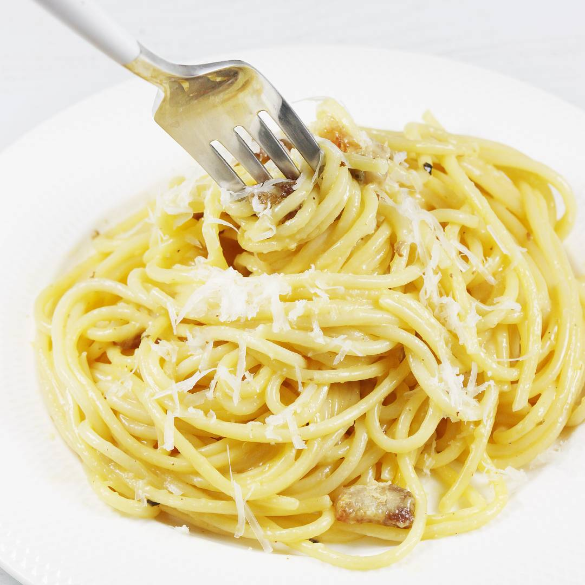

Home
Carbonara

The Carbonara is a classic Italian pasta dish hailing from Rome.
It is traditionally made with just four ingredients: pasta (like spaghetti or rigatoni), guanciale (cured pork jowl), eggs (or egg yolks), Pecorino Romano cheese, and black pepper. Authentic versions never use cream.
In our receipe we will follow the traditional recipe and use only the ingredients mentioned above.
The total time to preapre this dish take around 30 to 40 minutes, and it's pretty easy to make even as a cooking amateur.
Ingredients
- 500 grams of Spaghetti pasta
- 300 grams of Guanciale (If you cannot obtain it, you can use bacon instead, however it won't be nearly as good.)
- 5 egg yolks and 2 whole eggs
- 100 grams of Pecorino Romano cheese
- Pinch of fresh pepper
Preparation Steps
- Choose a large frying pan. Place the sliced meat in a cold pan. Turn the heat to a slightly higher setting than low and wait until the fat renders and the meat browns. Stir a few times while browning. Set the pan aside.
- Mix the yolks and whites thoroughly into a smooth liquid, e.g. using a kitchen whisk.
- Another crucial ingredient in spaghetti carbonara is cheese. You'll need about 100g of Pecorino Romano sheep's cheese (more or less, as you prefer). This is a super aromatic and delicious mature sheep's cheese. Grate the cheese very finely.
- Pour water into the pot and bring it to a boil. You need 5 liters of water to cook 500 grams of dry pasta. Add salt only when it starts to boil. Add a tablespoon of salt to the boiling water. Place the pasta in the pot and cook until al dente.
- Once the pasta has softened enough to be completely submerged in the water, you can stir it. It should be springy when cooked, but not break when rolled around your finger. I usually cook spaghetti for a minute longer than the manufacturer recommends on the package.
- Transfer the cooked pasta to a colander and immediately into the pan with the bacon and fat (the pan must already be off the heat). The pasta should be wet. Note: reserve one cup of the pasta cooking water.
- Stir everything together. After a moment, pour in the egg mixture with grated cheese and mix again. Stir vigorously. Do not heat the carbonara in the pan to prevent the egg mixture from curdling. Serve the spaghetti carbonara immediately. You can check the taste and add more freshly ground pepper, if necessary, or add a splash of the cooking water. Sprinkle each serving with the remaining grated cheese, if desired.
Enjoy your meal!